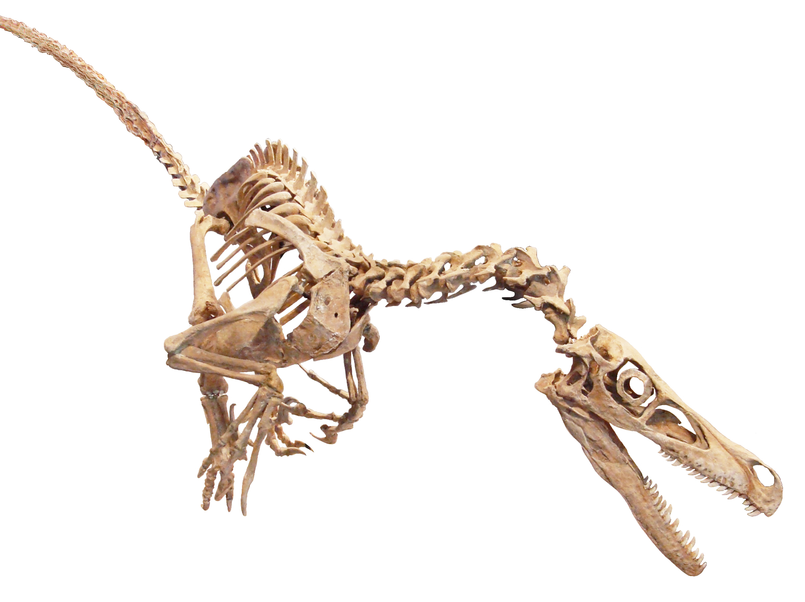
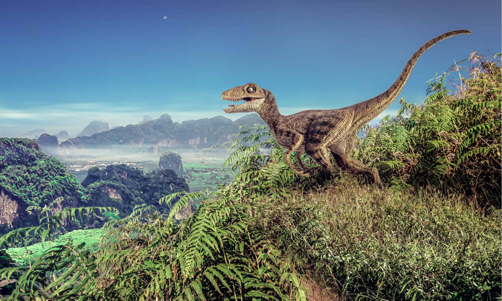

Overview
The Velociraptor was a dromaeosaurid dinosaur that lived in Asia around the Late Cretaceous epoch, about 75 million to 71 million years ago. It survived by feeding on smaller and/or slower prey. It was known by its classic sickled toes (shown in picture) which were strong that it used against its prey. There are two main species of Vilociraptors,1.
| Genus: | Velociraptor |
|---|---|
| Species: | Mongoliensis/Osmolskae |
| Family: | Dromaeosaurid |
| Order: | Saurischia |
| Sub-Order: | Theropoda |
| Class: | Reptile |
| Phylum: | Chordata |
| Kingdom: | Animalia |
Habitat
Velociraptors mostly lived in desert climates, mainly the gobi desert in Mongolia with a climate that had some but few trees and shrubs and greenery. There were also some streams that provided them with water. They usually stay ed alone and in the same place
Identification
To identify a Velociraptor, you can distinguish it by its razor-sharp teeth, upturned nose, short and athletic body, and the renowned sickle claw, often referred to as the "killer claw," making it easily recognizable among dinosaurs. Additionally, Velociraptors were smaller than their Hollywood depiction in "Jurassic Park," typically the size of a turkey.
Skeletal Structure
Distribution Map

Habitat
Fossil Record
The fossil record is like a view of the past, because we found a majority of its fossils in Mongolia and China, which shows us the age of these dinosaurs, which are pretty old. The most significant part of these fossils was the famous sickle claw that they had. This tells us that they were small, feathered, and bird-like. These fossils helped us learn more about these dinosaurs and where they came from.
Who Found it
The Velociraptor was discorerd by Peter Kaisen during an American Museum of Natural History expedition to the Flaming Cliffs of the Djadokhta Formation, Gobi Desert. On the 11th of August 1923, he discovered the first Velociraptor fossil known to science with a crushed but complete skull, associated with one of the raptorial second toe claws (sickle claw).
Feeding and Diet
Velociraptors are believed to have primarily preyed on small lizards, mammals, and potentially even baby dinosaurs and their eggs as part of their diet. Their sharp teeth and large, sickle-shaped claws were well-suited for hunting and capturing such smaller prey, which likely constituted a significant portion of their food sources during the Late Cretaceous period.
Behaviors
Despite how they hae been potrayed in media, Velociraptors are not the pack hunting, killling machines that we think they are. These dinosaurs were most likely solitary animals who hunted alone and lived off of small easier to catch prey. They were agile and athletic, able to move quickly because of there small build. They also scavenged when they got the chance even tho they were not primarily scavengers
Comunication
There isnt much evidence on how Velociraptors comunicated due to the scarce fossil record. However scientists have found that these animals had bird like characteristics and most likely comunicated as such. They likely communicated through vocalizations, body language, and possibly visual displays. Vocalizations might have included calls, chirps, or hisses to convey information or warnings.
Life History Cycle
The Velociraptor life cycle was very similar to birds and reptiles. They started as babys, born from eggs and werre cared for by there mothers. They grew up quickly and learned the skills needed for life. Once our on there own the would live normally and eventually reproduce and pass away.
Breeding Habits
Velociraptors breeded much like modern day birds and reptiles using eggs as there way of reproducing. these eggs were protected and the offspring were fed and nurished.
Predetors
The Velociraptor was a small agile and fast animal but was not free from predetors. Even though they were fast, they were weak compared to other dinosaurs such as the Tyranasauras Rex or the "terror Birds" that roamed at this time.